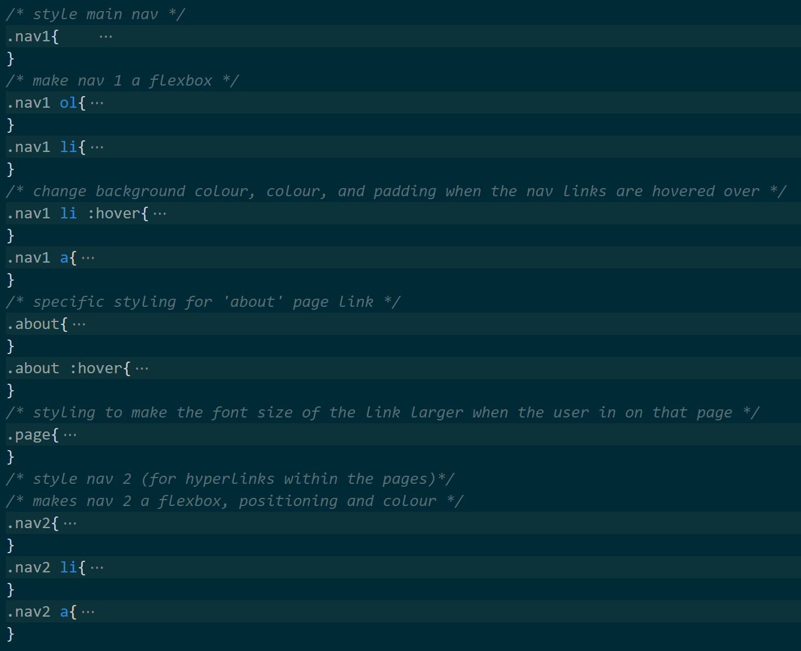
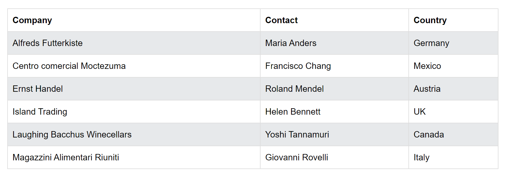
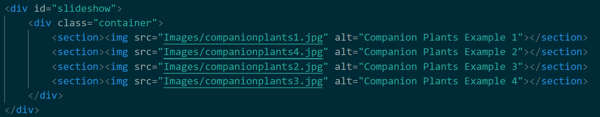

ABOUT GERTRUDE'S GARDEN
Gertrude's Garden is a website designed for gardening enthusiasts looking for tips on how to begin growing a garden at home. The pages separate different categories of home gardening for indoor plants, produce, and flowers. There is also a category for companion planting which is very helpful for beginners because companion plants can have a sort of symbiotic relationship, so there is less action required of the gardener to ensure the garden thrives.
WIREFRAMES
 |
Original WireframeThis was the first wireframe drawn. The final ones turned out to be qui different to this original one but it was a good basis to start from. |
 |
Second WireframeThis wireframe does not include a header title because it was designed after the logo was made. Since the logo contains the website name it was not necessary to rewrite it. However other than that this wireframe is the same as the original. |
 |
Third WireframeIn this wireframe it is evident that the design has changed in many aspects compared to the previous designs. One of the main changes is that the navigation bar is now inside the header. The footer has also become much simpler as it only contains the website name. |
 |
Final Wireframe 1This is one of the wireframes chosen for the layout for some pages in this website. This design was most strictly followed in the "Flowers" page. However it does contain elements that were used in many pages, including the second navigation bar underneath the first one. This was to fulfil the criteria for the hyperlinks within a page. The footer has also been reverted back to its original design.This wireframe included some elements from the previous designs, for example, the large image at the top of the page and the image carousel, although the image carousel has been simplified. The amount of padding at the sides of the body has also been reduced slightly because it was preferred after trying it out. |
 |
Final Wireframe 2It has the same general structure as the previous wireframe but is intended to be for another page of the website. It was used as the inspiration for the "Indoor" page in particular, although the page layout does not strictly follow this wireframe design. For example, the table in the final product has 3 images going across in each row rather than 2 in the wireframe. |
BONUS FEATURES
-
Logo image in header is a link (to home page)
HTML
- External CSS style sheet for consistency and easy changes to entire site (mystyle.css)
-
Commented CSS style sheet
Examples:
 -
Consistent colour scheme throughout the site

COPIED CODE
-
Table
Original Table Modified Table  Original HTML Modified HTML Original CSS Modified CSS 
-----------------------------------------------------------------------------------------------------------------------
Other tables in the website:
"Benefits of a Home Garden"
HTML
CSS
--------------------------------------------------------------------------------
"Garden Ideas"
HTML
CSS
--------------------------------------------------------------------------------
"Popular Companion Plants"
HTML
CSS
--------------------------------------------------------------------------------
"Gertrude's Companion Plants Chart"
HTML

CSS
-----------------------------------------------------------------------------------------------------------------------
-
Image Carousel
Original Image Carousel Modified Image Carousel Original HTML Modified HTML Original CSS Modified CSS Javascript (not modified)
-----------------------------------------------------------------------------------------------------------------------
-
Automatic Slideshow
Original Slideshow Modified Slideshow Original HTML Modified HTML  Original CSS Modified CSS -----------------------------------------------------------------------------------------------------------------------
INFORMATION SOURCES
- https://themicrogardener.com/13-benefits-of-growing-flowers-in-your-vegetable-garden/
- https://bestbuds.com.au/flowers-in-season-by-month/
- https://www.homestolove.com.au/best-spring-flowers-13235
- https://academyoffloralart.com.au/australian-flower-guide/seasons-colour-guide/
- https://www.homestolove.com.au/12-best-winter-flowers-12787
- https://gilmour.com/companion-planting-chart-guide
- https://www.veryediblegardens.com.au/iveg/why-grow-food/
- https://www.trees.com/gardening-and-landscaping/vegetable-garden-ideas
- https://www.betterhealth.vic.gov.au/health/healthyliving/gardening-planning-an-edible-garden
- https://www.homedepot.com/c/ai/how-to-start-a-flower-garden/9ba683603be9fa5395fab90db12ba2e
- https://www.thespruce.com/how-to-grow-an-amazing-flower-garden-4118357
- https://gilmour.com/companion-planting-chart-guide
- https://www.goodhousekeeping.com/home/gardening/advice/g1285/hard-to-kill-plants/
IMAGE SOURCES
- https://www.mydomaine.com/thmb/UJAtuoxPF3oFQZXd9bYOJNRkT9g=/900x675/smart/filters:no_upscale()/1566417254329_20190821-1566417255317-b9314f1d9f7a4668a466c5ffb1913a8f.jpg
- https://www.mydomaine.com/thmb/UJAtuoxPF3oFQZXd9bYOJNRkT9g=/900x675/smart/filters:no_upscale()/1566417254329_20190821-1566417255317-b9314f1d9f7a4668a466c5ffb1913a8f.jpg
- https://hips.hearstapps.com/hmg-prod/images/gettyimages-1205923822-612x612-1597694031.jpg
- https://nurserynisarga.in/wp-content/uploads/2020/04/asparagus-fern-plumosus-150.jpg
- https://www.interflora.com.au/blog/image.axd?picture=/airplant2.jpg
- https://www.daun.com.my/wp-content/uploads/2016/08/20160817_131507_HDR-e1495893987481-600x450.jpg
- https://www.gardeningknowhow.com/wp-content/uploads/2020/11/foliage-plants.jpg
- http://cdn.shopify.com/s/files/1/0376/7785/8947/products/7_d2605501-f159-4e6c-8f1d-e57f38d6ed21.png?v=1657737995
- https://www.heraldscotland.com/resources/images/13440775/?type=responsive-gallery-fullscreen
- https://www.heraldscotland.com/resources/images/13440773/?type=responsive-gallery-fullscreen
- https://www.gardeningknowhow.com/wp-content/uploads/2020/11/peruvian-lily.jpg
- https://www.gardeningknowhow.com/wp-content/uploads/2017/08/divide-anthurium.jpg
- https://i.etsystatic.com/10286820/r/il/71be64/2085617252/il_1588xN.2085617252_cxjg.jpg
- https://www.dawsonsgardenworld.com.au/wp-content/uploads/2013/06/Frangipani-White-1.jpg
- https://www.highcountrygardens.com/media/catalog/product/a/q/aquilegia-caerulea-rocky-mountain-columbine-cropped.jpg?quality=80&bg-color=255,255,255&fit=bounds&height=560&width=560&canvas=560:560
- https://www.yates.com.au/media/a52frve1/moth-orchids-1.jpg?mode=crop&anchor=center&widthratio=1.5&height=576&format=jpg
- https://imagesvc.meredithcorp.io/v3/mm/image?url=https%3A%2F%2Fstatic.onecms.io%2Fwp-content%2Fuploads%2Fsites%2F24%2F2022%2F05%2F31%2FGettyImages-1194703346-2000.jpg&q=60
- https://www.miraclegro.com/sites/g/files/oydgjc111/files/styles/scotts_lp_mega_feature_normal/public/asset_images/main_IMG_5056_718x404.jpg?itok=3pS_EV8c
- https://d3lp4xedbqa8a5.cloudfront.net/s3/digital-cougar-assets/homes/2022/03/23/1647991701833_luculia.jpg?width=1174&height=&mode=crop&scale=both&anchor=topcenter&quality=70
- https://d3lp4xedbqa8a5.cloudfront.net/s3/digital-cougar-assets/homes/2022/03/02/9494/Untitled-design---2022-03-02T145826.375.jpg?width=768&height=639&mode=crop&quality=75
- https://www.gardenia.net/storage/app/public/uploads/images/detail/N4sN7awyguVsawb1BT0GoNKwTdoatYB5vCwnP0GP.webp
- https://www.trees.com/wp-content/uploads/files/inline-images/vegetable-garden-ideas/tiered-vegetable-plants.jpg
- https://www.trees.com/wp-content/uploads/files/inline-images/vegetable-garden-ideas/raised-beds.jpg
- https://www.treehugger.com/thmb/j163zwa0bY1dW5244iPxaUHTjHo=/2000x1335/filters:fill(auto,1)/verticalgardenusingbuilt-inshelves-4019aba2ee0041d983e6d884e9c9cd5b.jpg
- https://i.ytimg.com/vi/GfEqy7tW9Wg/maxresdefault.jpg
- https://www.bhg.com/thmb/p0mS4ynyh0KqmbBBLZwxKhLs_-I=/1659x1244/smart/filters:no_upscale()/edible-window-box-632f2491265943ed94348a4f793745d5.jpg
- https://balconygardenweb-lhnfx0beomqvnhspx.netdna-ssl.com/wp-content/uploads/2019/05/homemade-hydroponic-system4.jpg
- https://www.offthegridnews.com/wp-content/uploads/2015/05/vegetable-garden-athomefcDOTcom.jpg
- https://encrypted-tbn0.gstatic.com/images?q=tbn:ANd9GcTUYYS89uKAdX1ZkFDLsHnzdu2uBaGZPBRdAyCXg_o8xwHcoSv6BkExhC_vjXPSQlWXgLA&usqp=CAU
- https://assets.learningwithexperts.com/8fe6fd1c-4a21-4bc6-b8bc-897f9e1fffa0/765x431
- https://resources.stuff.co.nz/content/dam/images/1/w/y/r/c/t/image.related.StuffLandscapeSixteenByNine.710x400.1xlt8c.png/1572309454606.jpg
- ttps://hips.hearstapps.com/hmg-prod/images/gettyimages-168263448-1528839151.jpg?crop=0.837xw:0.627xh;0.163xw,0.245xh&resize=1200:*
- https://cdn.britannica.com/91/219691-050-EDBF1A88/Orange-Persian-buttercup-flower-plant.jpg
/1566417254329_20190821-1566417255317-b9314f1d9f7a4668a466c5ffb1913a8f.jpg){kind=link}
{kind=link}
{kind=link}
{kind=link}
{kind=link}
{kind=link}
{kind=link}
{kind=link}
{kind=link}
{kind=link}
{kind=link}
{kind=link}
{kind=link}
{kind=link}
{kind=link}
{kind=link}
{kind=link}
{kind=link}
{kind=link}
{kind=link}
{kind=link}
/verticalgardenusingbuilt-inshelves-4019aba2ee0041d983e6d884e9c9cd5b.jpg){kind=link}
{kind=link}
/edible-window-box-632f2491265943ed94348a4f793745d5.jpg){kind=link}
{kind=link}
{kind=link}
{kind=link}
{kind=link}
{kind=link}